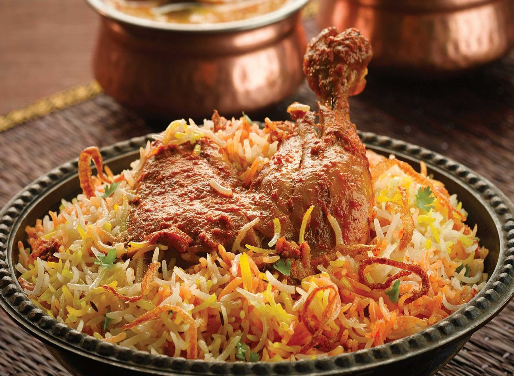
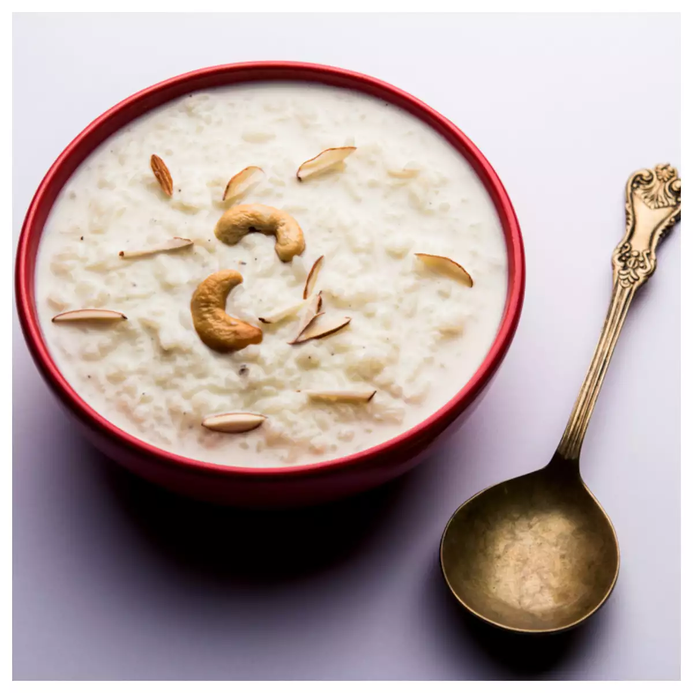

Khichuri

Khichuri is a traditional Bangladeshi recipe. This is a wholesome comfort meal of rice, lentils and vegetables, altogether. There are different ways of cooking Khichuri. Plain Khichuri generally prepared with rice and moong or masoor dal is the best food we can have when we are sick. It is one of the first foods that we give to our babies when they are 6-9 months old.
Khichuri RecipeKacchi
Kacchi Biriyani is a traditional dish in south Asia. It is a unique mixture of spices, vegetables, and meat that is cooked in a sealed pot over slow heat. This dish has been around for centuries and is popular in Bangladesh, India, Pakistan, and other parts of the world. Kacchi Biriyani is a must-have dish for special occasions and festivals. Also, It is popular as a street food and is served in many restaurants and food courts. Kacchi Biriyani is a great way to incorporate a variety of flavors into one dish. The blend of spices, vegetables, and meat creates a unique and flavorful dish. It is also a great way to get all the essential nutrients needed in a balanced diet.
Kacchi RecipePayesh
Payesh is a Bengali birthday special sweet dish or dessert prepared at every home in Bengal. Payesh is a sugary concoction of flavourful gobindobhog rice/basmati rice & milk flavored with cardamom and bay leaves. Apart from West Bengal & Bangladesh, this sweet is popularly known as rice kheer(in Hindi language)or Payasam (in South Indian languages). Bengali payesh is quite different from other Indian rice desserts. Just because it is made with special flavourful rice named gobindo bhog.Though instead of gobindo bhog rice, good quality flavored basmati rice also can be used. However, fine & flavourful rice is a must for making payesh. Apart from flavourful rice,full cream milk & sugar are 2 must-used ingredients for making this dish. Traditionally payesh is generally prepared with sugar or chini. Though except for this chini’r payesh we have a separate gurer payesh recipe if you want to replace the sugar with gur.
Payesh Recipe